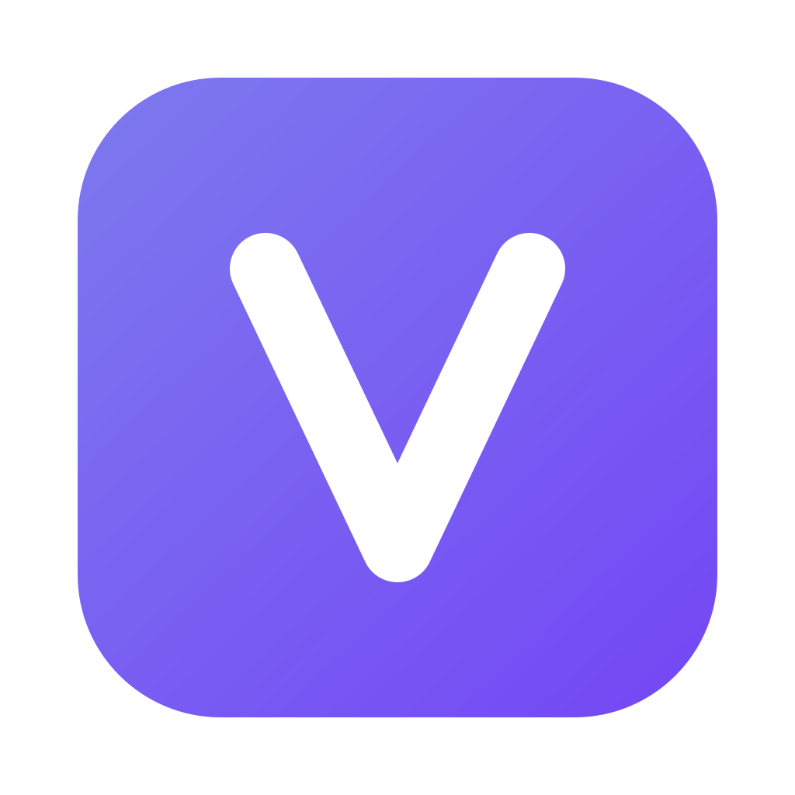

VerdictFor teams who code with Claude Code and Codex
Every teammate's sessions land in one place — full transcripts, the diffs each turn produced, and the problems people mentioned along the way. Verdict is the hub your agents report to.
For macOS. The desktop app is where the terminal and session sync live.
Your team ships with AI all day — and nobody can see anyone else's sessions.
Work gets repeated. Bugs get mentioned to an agent in passing, and lost.
Nobody knows what actually changed.
The callback keeps landing on localhost in production.
nextUrl.origin resolves to the container's own address behind the proxy.
Reading x-forwarded-host instead fixes it.
Real shells on your own Mac, inside the app — a real pty, so vim, top, password prompts and claude behave. Up to four panes at once, so several agents run in parallel. A shell belongs to the project and outlives the page: navigate away, come back, and the build is still going.
The ANSI palette is defined per theme, so a git diff is readable on cream too.
The terminal is macOS and Verdict.app only — a browser tab has no shell to open. It runs on your machine; nothing is hosted.
Speedometer overlaps route controls during navigation
Diff view drops the last line of a hunk
Add keyboard shortcut for merge
Workspace switcher forgets scroll position
Rework the auth redirect flow
Cache the session manifest
Per-user encrypted key storage
Cream light theme
A changelog built from sessions and merged PRs, grouped by day.
Today
Yesterday
Now, next, later — with votes. Enough structure to agree on order.
Collapsible session layout
Cursor and Copilot sessions
Session replay
Multi-repo. Link a local folder so its AI sessions sync.
Per-workspace invites. Nobody arrives with sight of your other work.
Transcripts and diffs sync to your workspace's database. The terminal and the agents run entirely on your Mac. Project membership is checked on the server for every query — not filtered in the browser — and that boundary is covered by tests that fail if a filter is removed.
No. Each person adds their own Anthropic or OpenAI key. Verdict never holds a shared one, and never bills for inference — there is no metered cost on top.
The first 30 days are free, no card needed. After the trial, without a subscription, the account moves to the free plan — one workspace, two members, enforced server-side. Cancel any time.